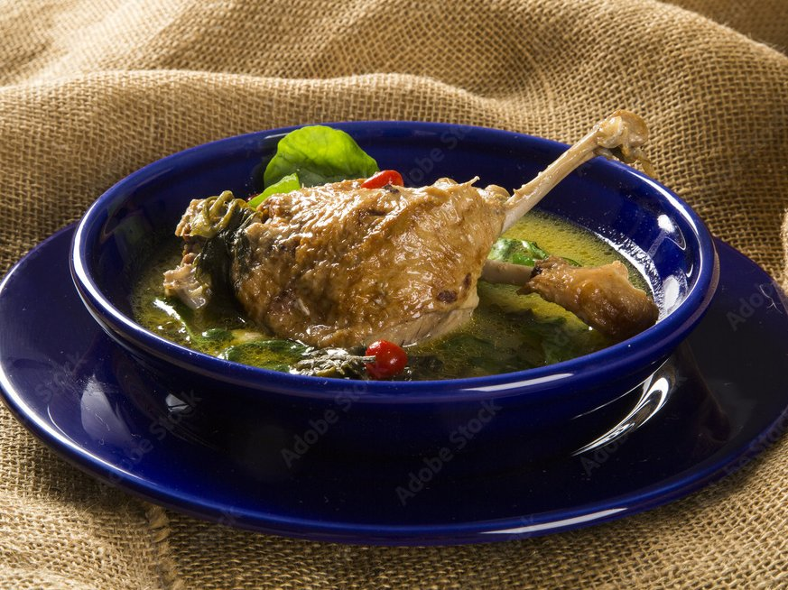

Pato no tucupi
O pato no tucupi é um prato típico da região Norte do Brasil. Ele é preparado com o tucupi, que é um líquido extraído da mandioca brava, e com jambu, uma erva encontrada na região norte, e pode ser servido com arroz ou farinha d'água de mandioca.
Ingredientes
- 3 kg de pato
- 6 litros de tucupi
- 6 maços de jambú
- 1 maço de alfavaca
- 1 maço de chicória do norte
- 7 cabeças de alho
- 21 unidades de pimenta de cheiro
- Sal a gosto
Modo de Preparo
Lave os patos em água corrente. Em um recipiente prepare o vinha·d'alho com o suco dos limões, 03 cabeças de alho socadas, o vinagre de vinho branco, 01 pimenta de cheiro, sal e água. Tempere o pato no vinha·d'alho e deixe descansar de um dia para o outro na geladeira. Asse os patos em forno médio por aproximadamente 90 minutos. Em uma panela coloque para ferver o tucupi com 03 pimentas de cheiro, 02 cabeças de alho, alfavaca, chicória e sal. Após os patos esfriarem, cortá·los em 04 pedaços cada. Em uma panela coloque 02 litros do tucupi já temperado e ferve os patos em pedaços, até ficarem bem macios. Desossar e tire a pele dos patos já macios. Para preparar o jambú, pegue ele separe as folhas com os talos mais tenros. Lave em água corrente. Em panela com água fervente e sal escaldar levemente o jambú. Escorre e reserve. Em um alguidar de barro colocar os pedaços de pato e cobri-los com o jambu e o restante do tucupi que não foi usado para amaciar os patos. O molho de pimenta de cheiro: as pimentas que restarem devem ser amassadas com sal a gosto e 01 dente de alho socado, completa com um pouco de tucupi quente. O pato no tucupi é servido com arroz branco, farinha d'agua de mandioca e molho de pimenta. Normalmente usa-se prato fundo e colher de sopa.
Receita retirada do site CyberCook